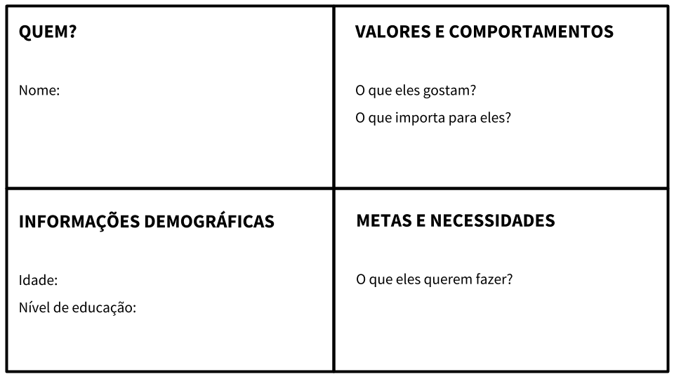
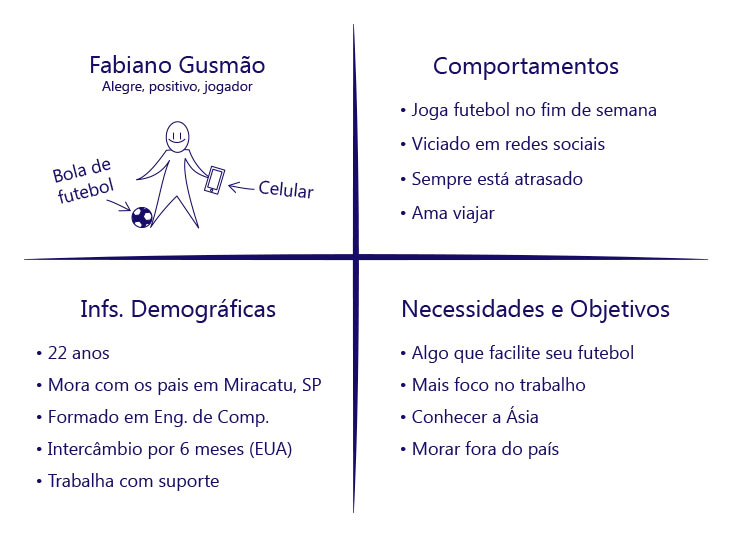
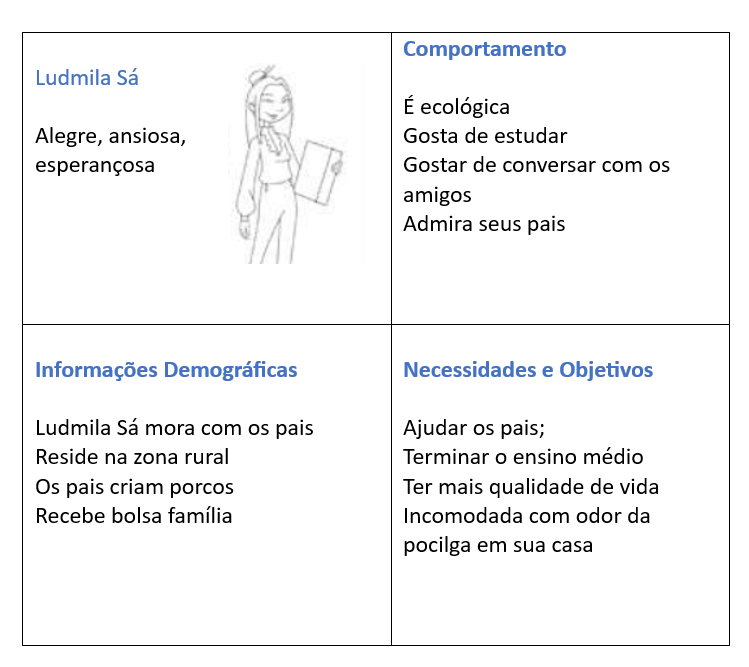

O processo de definir, segundo Rocha (2018), significa identificar o desafio a ser superado. Nesta etapa, você deverá definir qual o problema que pretende resolver. Agrupe os problemas por afinidade levantados no brainstorming. Exemplo: agrupe os problemas relacionados ao combate ao desperdício de alimentos, ou ainda, ao combate à pobreza. Defina coletivamente o problema que deseja solucionar. Discuta os “prós e contras” de cada problema levantado. Indague: Qual a relevância do problema? Qual o impacto social do problema? Qual sua viabilidade? Com qual ODS se relaciona?
Após definir o problema, será desenhado a proto-persona. Mas o que é Proto-persona? Diferente da persona, que é construída com base em pesquisas prévias e dados coletados com pessoas usuárias reais, a Proto-persona é a construção realizada a partir das ideias e percepções da própria equipe. E essa Proto-persona pode ser validada depois com uma pesquisa de campo (Monat et al., 2019).
Não existe uma pesquisa direta com as pessoas usuárias para estruturar essa Proto-persona, entretanto, qualquer outro dado que o time tenha será válido para fazer uma mais fiel.
Aqui sua equipe irá fazer o agrupamento e a definição do problema e ainda desenhar o quadro abaixo da Proto-persona.
Defina, no quadro abaixo, informações da proto-persona, tais como: nome, idade, escolaridade, o que gosta e quais suas necessidades. Veja os exemplos abaixo:



O problema escolhido é o desafio a ser superado. Assim, é recomendável enunciar perguntas: “Como podemos?...” ou “E se?...”. A intenção é gerar ideias vislumbrando uma possível solução. Em vez de falar “eu preciso de”, coloque o seu público como agente: “nossa persona precisa de…”. Tem-se, por exemplo: “Como podemos reduzir a poluição de resíduo animal no sítio dos pais de Ludmila?”. Como diminuir o odor que sai da pocilga no sítio de Ludmila Sá? Como podemos ajudar Ludmila Sá? Na seção seguinte, falaremos sobre ideação.
LEMBRE-SE: Ao definir o problema, define-se aquilo que se deseja solucionar.
Home